THE BIG PICTURE
|
|
Version 0.3 Last Update: 13.08.2020 |
|||||
| Visual Perception |
Name from our perspective |
Name from the Large Scale Structures perspective |
|||||
| 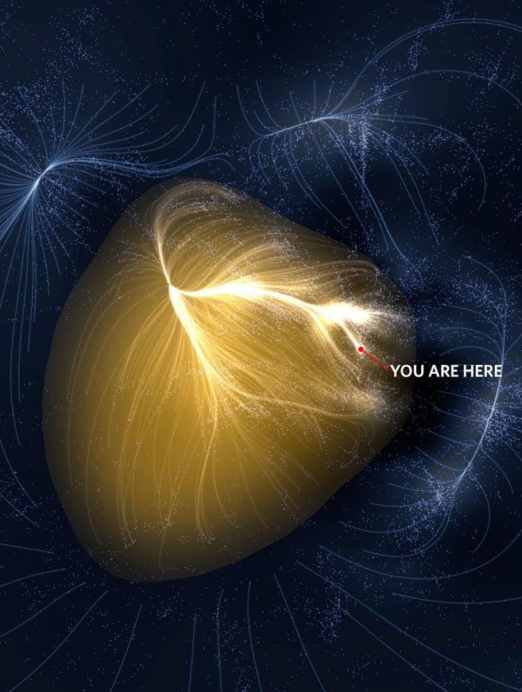 |
Large scale structure |
Jellyfish? |
|||||
| 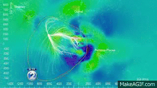 |
Geometric Object Dilatation
|
Geometric Object Dilatation
|
|||||
| 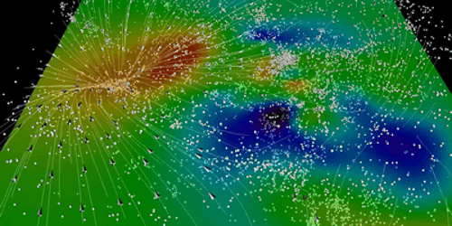 |
1. Extremely massive objects bend space and time. "When such a massive object is spinning, its gravitational influence pulls space and time around with it, an effect called frame-dragging.” Credits: National Radio Astronomy Observatory (NRAO) |
Stomach |
|||||
| 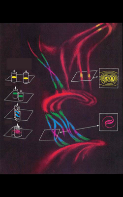 |
Metabolism / Nervous System |
||||||
|
|||||||
| 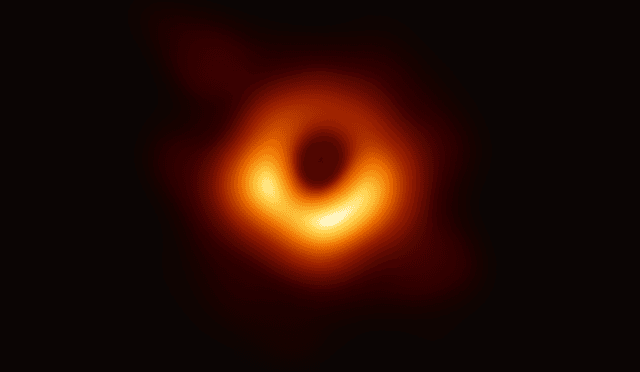 |
Supermassive Blackhole |
Proton? |
|||||
| 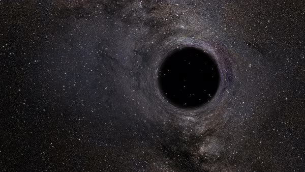 |
|
Neutron? |
|||||
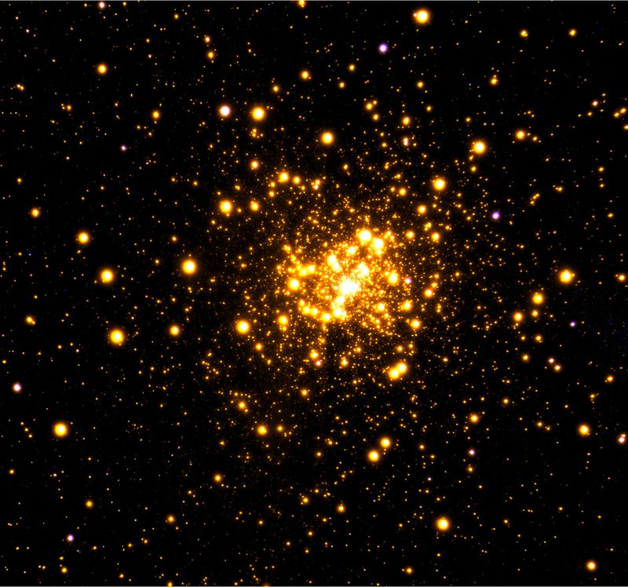
 |
Electron |
||||||
|
DNA |
||||||
| 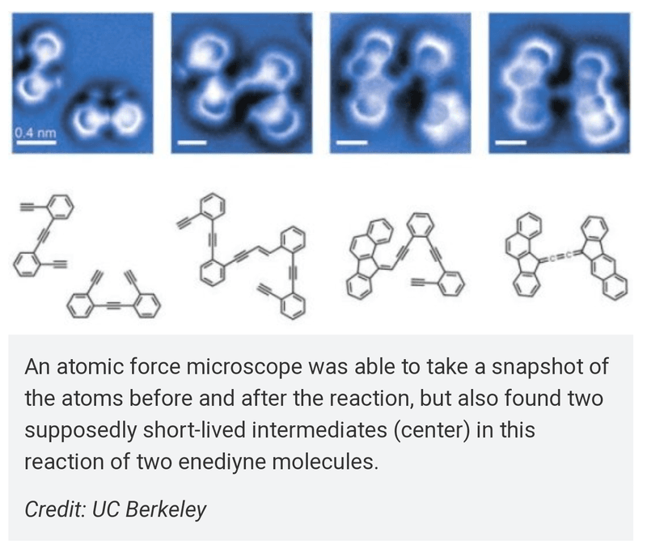 |
Quantum particels? |
||||||
 |
Spacetime? |
AS ABOVE SO BELOW...
Right in front of our eyes, the whole time…
TIME TO CONNECT THE DOTS...
TIME TO CONNECT THE DOTS...
| 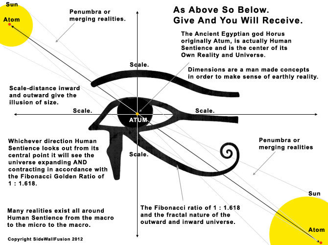 |
Where are the missing numbers of atoms and/or molecules?
TIME DILATION (link)
Its like the fan:
Slower speed, high probability to hit a free space.
Higher speed, lower probability to hit a free space.
A second for the “jellyfish”, is a billion years in our
time.
This article of a Quora guy hits it pretty well:
Basically the idea is simple. As I understand, it is currently believed that matter and energy is on a fixed band, starting with sub-atomic particles and quantum mechanics, working up through atoms and molecules, to galaxies and associated physics.
Instead, think of this band as merely our perception of an infinite spectrum of matter, energy, and time.
-If matter is infinite, as it seems to be, then it would stand to reason that it would look something like a fractal, self similar, repeating through infinity.
- An atom consists of a dense nucleus at its core, surrounded by a probability cloud of positively charged electron(s), inbetween which is space, vast distances of space. Similarly, a galaxy is believed to consist of a dense nucleus at its core (super massive black hole), surrounded by a cloud of energy emitting stars. Of course, separated by vast distances of space.
-Time is relative. If you took a galaxy and scaled it down to the size of an atom, you would proportionately speed up time as you reached the self similar "band-width". The stars that were once traveling slow enough to be observed, are now traveling much faster than the speed of light (which would also be scaled down beyond what we can observe) and running the course of their lives in a fraction of the time it takes this post to reach its destination when i hit submit. This may be why we can only predict where an electron could be at any given time.
-When we split an atom, we are releasing the energy of a miniscule, supermassive black hole
-Sub atomic particles seem to have widely varying properties and sizes, and so do the components of galaxies.
-Anyone notice that a map of the known universe
seems to have a similar structure as a molecule?
BIOS, LIFE or LIVE? GOD, GOOD, GODS or GOODS?
ZOE, ZOO, ANIMA(L), HUMAN
(civilized being) or ANDROID (human shaped)?
Sanskrit jivah "alive, living;" Old Persian *jivaka- "alive," Middle Persian zhiwak"alive;" Greek bios "one's life, course or way of living, lifetime," zoe "animal life, organic life;" Old English cwic, cwicu "living, alive;" Latin vivus "living, alive," vita"life;" Old Church Slavonic zivo "to live;" Lithuanian gyvas "living, alive," gyvata "(eternal) life;" Old Irish bethu "life," bith "age;" Welsh byd "world."
|
|
Geometric Object Dilatation |
|
Aurelia is a genus of scyphozoan jellyfish whose members can commonly be seen floating in coastal waters.
Though they do not have eyes or ears, the marine
invertebrates do possess sensory organs that allow them to detect light,
chemicals, and touch.
Moreover, the medusa feature reduced and modified tentacles, known as tentaculocysts, along their margins, which contain hollow sacs called statocysts that maintain equilibrium.
If the jellyfish becomes tilted out of its normal swimming axis, the tentaculocysts are stimulated and the statocyst in the highest position leans in such a way that rapid nerve impulses are created.
In turn, the stimulated nerve endings cause the
muscles of the jellyfish to contract, correcting its position in the water.
WHAT IS MY POINT HERE?
I don’t think we're seeing solid matter in our part of the universe, cause if its a jellyfish, we are in the ocean.
We named it a lifeform, but its obviously
an "automated", neuronal, hydro mechanic cluster
of galaxies (atoms)
CONCLUSION:
WE ARE THE LARGE SCALE STRUCTURES OF THE DIMENSION BELOW
WHAT ABOUT MATH & STEM’s?
QUANTUM PHYSICS "STRING" IS THE PATH OF A SINGLE SOLAR SYSTEM, IN BIOLOGY “DNA”
WHAT ABOUT GRAVITY?
IF WE THINK THE UNIVERSE ELECTROMAGNETIC, GRAVITY IS THE VOLTAGE(V,tension)
A SHORT HYPOTHESIS OF
EVERYTHING
(E=mc² depending on the dimensional perspective)
Heraklit: “Panta rhei” "Everything changes and nothing remains still ... and ... you cannot step twice into the same stream"
Buddha: “Everything is change“
Einstein: “Everything is relative“ (Einstein didn't say this, but metaphorical speaking)
With today’s words: “Everything is motion” & “Everything is neuronal network”
BLACKHOLE NETWORKS acting like a MYCELIUM
aka
EVOLUTIONARY ALGORITHMS in a POLYGON EVOLUTION process
1. Extremely massive objects bend space and time.
"When such a massive object is spinning, its gravitational influence pulls space and time around with it, an effect called frame-dragging.”
Credits: National Radio Astronomy Observatory (NRAO)
2. An extremely gravity structure(in lifeforms called stomach) shapes its surrounding frame(body) in the most effective energetic way(evolution) and duplicates this tactic through time, with successful recursion (DNA)
1. ENERGY(V) LEADS FLOW(A)
2. FLOW(A) LEADS BODY(Watt)
3. BODY(Watt) LEADS ENERGY(V)
4. INFINITE (∞), OMNIDIRECTIONAL, INTER DIMENSIONAL
5. EVERYTHING IS RELATIVE…
6. …BUT E=MC and 1+2 equals 3
-
…and linguistic “ketchup” breaks down into “Lycopersicon lycopericum, C6H12O6, ? COOH, (C6H12O6)?n, NaCI, Allium cepa, Allium sativum”
8. MIND THE TIME
DILATION
The left picture is a model of the Birkeland current theory.
The crossings are galaxies.
In “the Big Picture” we actually seeing THREE models in this ONE Birkeland current model, but on different scales:
-a galaxy forming out of Birkland currents/Darkflows
-an atom forming out of dark matter
-a neuronal connection forming in the brain
(Pavlow conditioning, sound&image = stimuli&stimuli = word = mental atom/galaxy)
| 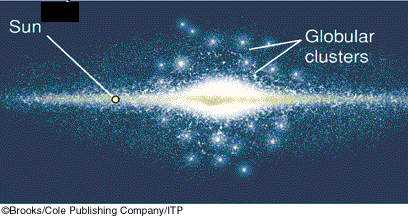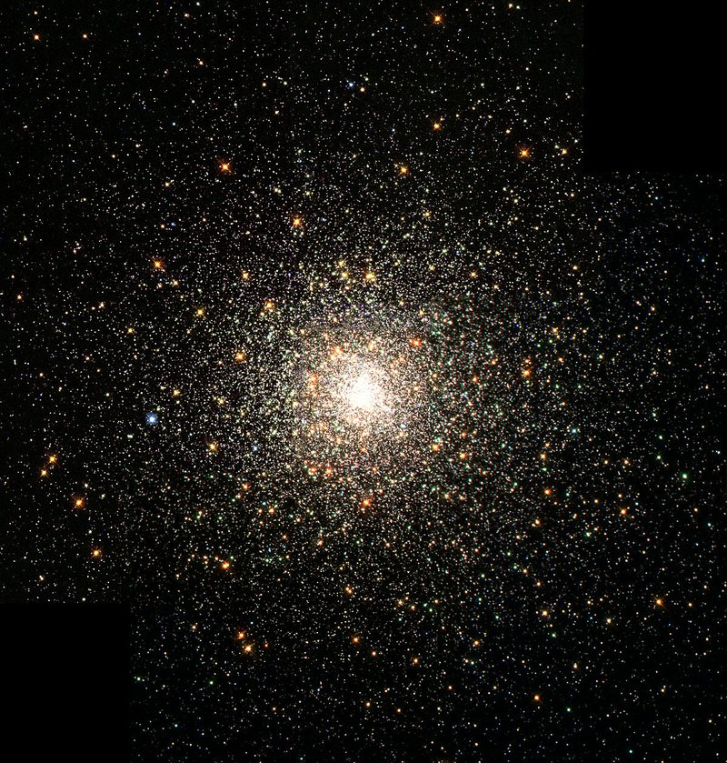 |
GLOBULAR CLUSTER: every galaxy is surrounded by perfect spheres, made of surrounding suns.
THE ELECTRON: appears to be spherical to within 0.00000000000000000000000000001 centimeter or 10 to the power of -29
Such a spherical object is probably an energy object
(gravitational relation) instead of a perfect mechanical sphere (matter)
GLOBULAR CLUSTER and ELECTRON are the same entity on different
dimensions!
| 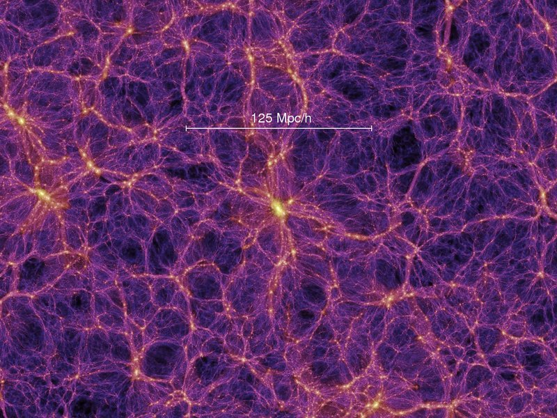 |
-the blue lines are DNA, shaped out of dark
energy or dark matter (one galaxy equals around 500.000.000 DNA strands)
(i really need to make a comment here, because i dont understand something about
this: either my perspective of the scale of the DNA is wrong or stones and
metalls are having a kind of mechanical DNA)